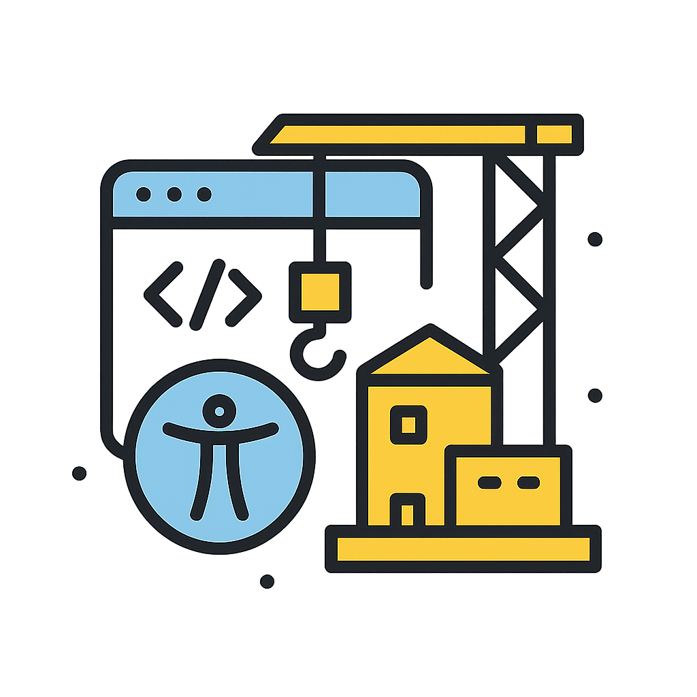

Uwaga! To nie jest oficjalna strona WCAG!
Ta strona służy jedynie do celów edukacyjnych i ćwiczeniowych. Nie jest to oficjalna dokumentacja WCAG 2.1.
Na stronie mogą występować błędy lub niektóre funkcje mogą nie działać poprawnie, ponieważ projekt jest w
trakcie rozwoju.